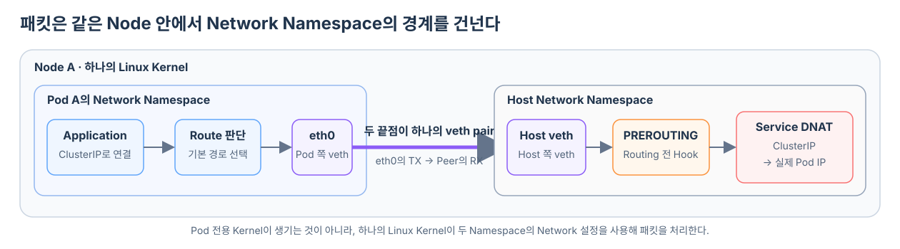
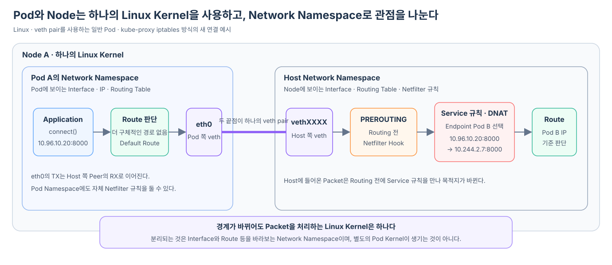

Pod A의 Application이 Service ClusterIP로 연결을 시작했다고 하자. 설명에서는 흔히 패킷이 “Pod에서 나와 Node의 Kernel로 들어간다”고 말하지만, 이 표현만 보면 Pod와 Node가 각자 별도의 Kernel을 가진 컴퓨터처럼 느껴질 수 있다.
실제로 Container는 Node에서 실행되는 Process이고 별도의 Kernel을 갖지 않는다. Pod의 Process는 Node의 Linux Kernel을 함께 사용하면서, Network Namespace를 통해 자신에게 허용된 Network Interface와 Routing Table만 본다. Linux가 하나의 Kernel 안에서 이런 Network 관점을 분리하는 이유와 범위는 Linux Network Namespace는 무엇을 분리하는가?에서 먼저 살펴본다.
이 구조를 이해하면 Pod의 eth0으로 나간 패킷이 어떻게 Node의 iptables 규칙을 만나는지 연결된다.
이 글은 Linux에서 veth pair를 사용하는 일반 Pod와 kube-proxy의 iptables 방식을 기준으로 한다. CNI Plugin이나 Service Proxy 구현이 다르면 Interface와 Packet Hook의 세부 모습도 달라질 수 있다.
Pod가 분리해서 갖는 것은 Kernel이 아니라 Network 관점이다
Linux의 Network Namespace는 Network Interface, IP 주소, Routing Table, Port와 Firewall 규칙 같은 Network 자원을 분리한다. 따라서 Pod A 안에서 ip addr나 ip route를 실행하면 Node가 보는 목록 전체가 아니라 Pod A의 Namespace에 속한 정보가 보인다.
Node A의 하나의 Linux Kernel
├─ Pod A가 사용하는 Network Namespace
│ ├─ eth0
│ ├─ Pod IP 10.244.1.5
│ ├─ Pod 전용 Routing Table
│ └─ Pod Namespace의 iptables·nftables 규칙을 가질 수 있음
│
└─ Host Network Namespace
├─ Node의 Interface
├─ Node의 Routing Table
└─ kube-proxy가 구성한 Service 규칙 등
Netfilter라는 Packet 처리 기능은 하나의 Linux Kernel이 제공한다. 하지만 iptables나 nftables로 구성하는 일반적인 규칙 집합은 Network Namespace별로 나뉠 수 있다. 따라서 Pod Network Namespace와 Host Network Namespace 모두 자신의 Netfilter 규칙을 가질 수 있으며, 한쪽의 규칙이 다른 쪽의 규칙과 자동으로 같아지는 것은 아니다.
이 글의 흐름에서는 Pod Namespace에 현재 Packet과 일치하는 별도 규칙이 없다고 가정하고, Host Namespace에 kube-proxy가 구성한 Service 규칙이 있는 경우에 집중한다. 그래서 그림에는 Host의 PREROUTING과 Service DNAT가 중심으로 나타나지만, 이것이 Netfilter가 Host Namespace에만 존재한다는 뜻은 아니다.
Pod 안의 Container들이 localhost로 통신할 수 있는 것도 같은 Pod의 Network Namespace를 공유하기 때문이다. 각 Pod는 Cluster 안에서 고유한 IP를 갖고, Pod 안의 Container들은 하나의 사설 Network Namespace를 공유한다.
veth pair는 두 Network Namespace를 잇는 가상 케이블이다
Namespace를 분리하기만 하면 Pod의 Network는 바깥과 단절된다. 일반적인 CNI 구성은 veth pair를 만들어 한쪽 끝을 Pod의 Network Namespace에, 다른 쪽 끝을 Host Network Namespace에 둔다.
Pod A의 Network Namespace Host Network Namespace
Pod 쪽 veth 끝점 Host 쪽 veth 끝점
이름: eth0 ══ veth pair ══ 이름: vethXXXX
두 Interface가 함께 하나의 veth pair를 이룬다. Pod 쪽 끝점은 Pod 안에서 eth0이라는 이름을 사용하고, 반대편 끝점은 Host에서 vethXXXX 같은 이름을 사용한다. 그래서 Pod A의 eth0에서 송신한 Packet이 Peer인 Node 쪽 veth 끝점의 수신 Packet으로 나타난다.
CNI Plugin은 Pod가 만들어질 때 이런 Interface와 IP, 필요한 Route를 준비한다. 구현에 따라 Host 쪽 veth를 Linux Bridge에 연결하거나, Route 또는 eBPF 처리를 사용할 수 있다. 여기서는 두 Namespace 사이를 잇는 veth pair에만 집중한다.
Application이 보낼 IP Packet의 경로는 Routing 조회로 결정된다
Pod A의 Application이 10.96.10.20:8000으로 TCP 연결을 요청하면 Application은 목적지 주소를 Socket에 지정한다. 실제 Packet을 만드는 일과 다음 경로를 고르는 일은 Linux Kernel의 Network Stack이 담당한다.
이때 Packet이 Routing Table이라는 별도 장치를 통과하는 것은 아니다. Kernel이 Pod A의 Network Namespace에 적용되는 Routing 정보를 조회해 Local로 처리할지, 어느 Interface로 내보낼지, 다음 Gateway를 사용할지를 결정한다. 이 Route 판단은 IP Packet을 송신할 때 항상 필요한 단계다.
Pod A의 Network Namespace에서 보이는 Routing Table을 단순화하면 다음과 같을 수 있다.
10.244.1.0/24 → eth0으로 연결된 Pod Network
default → eth0을 통해 기본 Gateway 방향
Service ClusterIP 10.96.10.20에 해당하는 더 구체적인 Route가 없다면 Default Route가 선택된다. 이 판단은 “Pod B가 어느 Node에 있는가”를 알아낸 것이 아니다. Pod A가 직접 연결된 Network가 아니므로 설정된 기본 경로로 내보낸 것뿐이다.
Application의 connect(10.96.10.20:8000)
→ Pod A Namespace의 Routing Table 조회
→ Default Route 선택
→ Pod 쪽 veth 끝점인 eth0에서 Packet 송신
→ Peer인 Node 쪽 veth 끝점에서 Packet 수신
Node 쪽 veth로 들어온 패킷은 PREROUTING을 만난다
veth pair를 건넌 Packet은 Host Network Namespace 입장에서 Node 쪽 veth로 들어온 수신 Packet이다. Linux의 Netfilter는 Packet 처리 경로 곳곳에 규칙을 적용할 수 있는 Hook을 제공한다.
이 Packet은 최종 Routing 결정을 내리기 전에 PREROUTING Hook을 지난다. 이름 그대로 Route를 고르기 전에 적용되는 지점이다.
Node 쪽 veth로 Packet 수신
→ Netfilter PREROUTING
→ 목적지 주소 변환 가능
→ 변환된 목적지로 Routing 판단
이 순서 때문에 실제 장비가 소유하지 않은 ClusterIP도 길을 잃기 전에 처리할 수 있다. Node가 ClusterIP 자체를 다른 Node로 Routing하는 것이 아니라, Routing 전에 Service 규칙이 Packet을 알아보고 목적지를 실제 Endpoint IP로 바꾼다.

kube-proxy는 규칙을 만들고 Kernel이 패킷에 적용한다
kube-proxy는 API Server를 통해 Service와 EndpointSlice 변화를 관찰한다. iptables 방식에서는 이 상태를 바탕으로 각 Node의 Kernel에 Service 전달 규칙을 미리 구성한다.
실제 Chain 이름을 단순화하면 다음과 같은 연결로 볼 수 있다.
PREROUTING
→ KUBE-SERVICES
→ 해당 Service의 Chain
→ 선택된 Endpoint의 Chain
→ DNAT 10.96.10.20:8000 → 10.244.2.7:8000
KUBE-SERVICES, KUBE-SVC-*, KUBE-SEP-* 같은 이름은 iptables 구현에서 볼 수 있는 내부 Chain 이름이다. 이해해야 할 핵심은 kube-proxy Process가 Packet을 하나씩 받아 중계하는 것이 아니라, kube-proxy가 준비한 규칙을 Linux Kernel이 Packet 처리 중에 적용한다는 점이다. iptables 방식에서는 Service별·Endpoint별 규칙이 구성되고 Destination NAT로 Backend에 연결된다.
DNAT 뒤에는 바뀐 Pod IP로 경로를 다시 판단한다
PREROUTING에서 Service 규칙이 적용되면 Packet의 목적지는 다음처럼 바뀐다.
처리 전 목적지 10.96.10.20:8000
처리 후 목적지 10.244.2.7:8000
이제 Kernel의 Routing 판단에는 ClusterIP가 아니라 실제 Pod B의 IP가 들어간다. 목적지 Pod가 같은 Node에 있으면 Node 내부 경로로 전달하고, 다른 Node에 있으면 CNI 기반 Network 구현이 준비한 Route나 Tunnel을 사용한다.
첫 Packet에서 정해진 NAT 변환은 Linux의 Connection Tracking, 즉 연결 추적 상태에 기록된다. 이후 같은 연결의 Packet에는 같은 변환이 유지되고, 응답 Packet에는 역방향 변환이 적용된다. 그래서 하나의 TCP 연결이 중간에 다른 Endpoint로 흩어지지 않고, 호출한 Application은 Service IP와 통신한 것으로 볼 수 있다.
압축됐던 문장을 펼치면 하나의 흐름이 된다
부모 글의 “Pod의 가상 Network Interface를 지나 Node의 Kernel로 이어진다”는 문장을 실제 구조로 펼치면 다음과 같다.
Pod A의 Application
→ 같은 Node Kernel이 Pod A의 Network Namespace에서 Route 판단
→ Pod 쪽 veth 끝점인 eth0에서 TX
→ 같은 veth pair의 Host 쪽 끝점에서 RX
→ Netfilter PREROUTING
→ kube-proxy가 미리 만든 Service 규칙
→ DNAT로 실제 Pod IP 선택
→ 바뀐 Pod IP를 기준으로 Routing
따라서 “Pod에서 Node의 Kernel로 이동한다”는 말은 별도의 Kernel 사이를 건넌다는 뜻이 아니다. 같은 Node의 Linux Kernel이 Namespace마다 분리된 Network 설정을 사용하고, veth pair를 경계로 Packet을 다음 Network 처리 영역에 전달한다는 뜻이다.